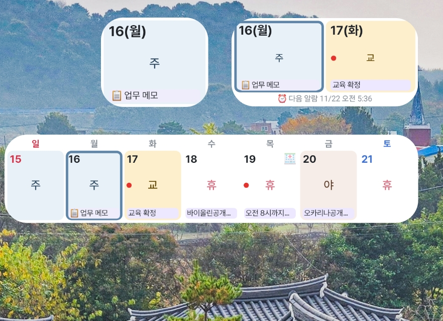

지금

바꾼 뒤 (오늘 = 근무 색으로 꽉 · 흰 글씨)
16(월) · 오늘
주간
07:00 ~ 19:00
📋 업무 메모
오늘16(월)
주간
07:00 ~ 19:00
📋 업무 메모
내일17(화)
교육
09:00 ~ 18:00
교육 확정
⏰ 다음 알람 11/22 오전 5:36
· 1일: 근무 이름을 크게("주" → "주간") + 근무 시간 · 칸 전체가 근무 색
· 2일: 날짜 대신 "오늘 / 내일" · 오늘만 진하게 꽉 · 빨간 점은 글자 바로 옆
· 7일: 오늘 칸만 진하게 꽉 (테두리 대신) · 나머지 칸 색 · 휴 조금 진하게 · 쉬는 날 오늘이면 회색으로 꽉